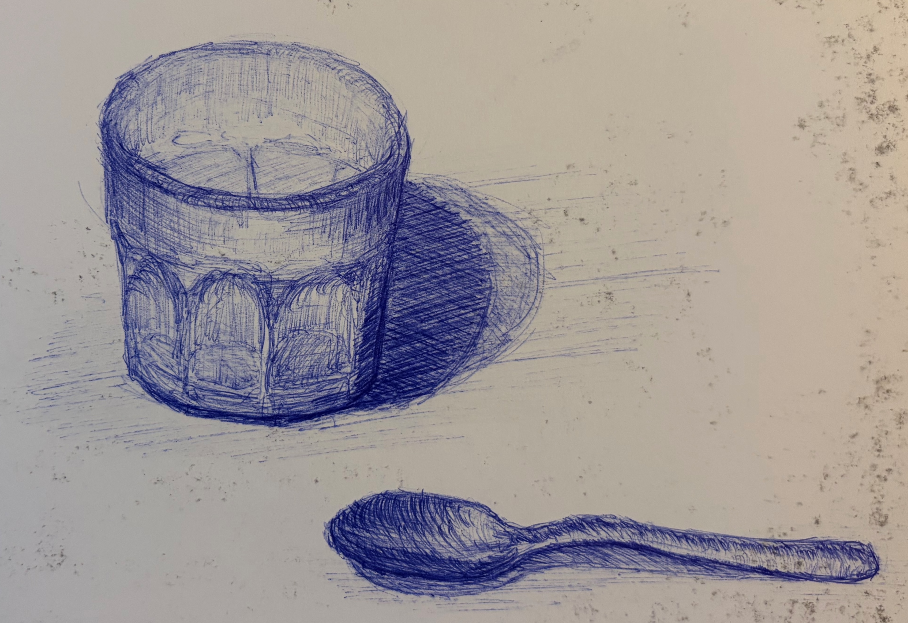

Quick sketch from a coffee shop in Seville, Spain. I enjoy using this blue BIC ball point pen because it has a wide range of texture and intensity depending on the angle you hold it at and the amount of force you apply to it.
